library(skimr)
library(mosaic)
library(readr)
library(ggformula)
library(readxl)
library(janitor)
library(tidyr)
library(tidyverse)
##
library(vcd) # (NEW!!) for Panel B
library(broom) # (NEW!!) for clean stat outputs
PanelA <- read.csv(file = "data/panel-A.csv")
PanelB <- read.csv(file = "data/panel-B.csv")
PanelC <- read.csv(file = "data/panel-C.csv")
panelE_AI <- read.csv(file = "data/panel-E-AI.csv")
panelE_tattoo <- read.csv(file = "data/panel-E-tattoo.csv")
panelE_allowance <- read.csv(file = "data/panel-E-allowance.csv")
panelE_bfgf <- read.csv(file = "data/panel-E-bfgf.csv")
panelE_mbti <- read.csv(file = "data/panel-E-mbti.csv")
panelE_tvshows <- readxl::read_excel("data/panel-E-tvshows.xlsx", col_types = c("numeric","date", "date", "date")) |> janitor::clean_names()Wall of Quantified Surprises
FOSEDA studio wall - Bodies, Habits and the World
Spine
What do teenagers’ bodies and habits look like, which habits travel together, and where is life long?
This sentence stays at the top. Every panel must attach to it. If a plot cannot be introduced in a clause that hangs off this line, it is off the wall.
Introduction — the tables we own
This folder is ours for the ten days. Three tables, three shapes.
- Panel A (
panel-A.csv) — YRBSS Quants: height, weight, days active, strength training, hours of sleep. - Panel B (
panel-B.csv) — YRBSS Quals: helmet, texting while driving, TV, race, gender, grade. Same survey, different columns. - Panel C (
panel-C.csv) — gapminder 2007 world. Ask a different map question than Group 3 (wealth, population symbols, continent). - Panel D (
Erin Brokovich) - A map of Hinkley, CA, USA - Panel E (
Primary Research) - Found Data (Hunches)
A and B are the same teenagers cut two ways. Do not mix them into one dishonest figure.
We load from this folder:
Found tables train the mark. A campus Free Hunch, if we collect one, is a made panel of the same pair type — new people, old grammar. It does not replace A, B, or C.
Panel A — body / measure
height, weight, physically_active_7d, school_night_hours_sleep are Quant. grade is Qual.
1. See the table
What is a case? Which columns are Quant / Qual? What is missing?
dplyr::glimpse(PanelA)Rows: 13,583
Columns: 8
$ age <dbl> 14, 14, 15, 15, 15, 15, 15, 14, 15, 15, 15, 1…
$ gender <chr> "female", "female", "female", "female", "fema…
$ grade <chr> "9", "9", "9", "9", "9", "9", "9", "9", "9", …
$ height <dbl> NA, NA, 1.73, 1.60, 1.50, 1.57, 1.65, 1.88, 1…
$ weight <dbl> NA, NA, 84.37, 55.79, 46.72, 67.13, 131.54, 7…
$ physically_active_7d <dbl> 4, 2, 7, 0, 2, 1, 4, 4, 5, 0, 0, 0, 4, 7, 7, …
$ strength_training_7d <dbl> 0, 0, 0, 0, 1, 0, 2, 0, 3, 0, 3, 0, 0, 7, 7, …
$ school_night_hours_sleep <chr> "8", "6", "<5", "6", "9", "8", "9", "6", "<5"…My PanelA data has:
- 13,583 observations and 08 variables.
age: Quantitative, numericheight: Quantitative, numericweight: Quantitative, numericphysically_active_7d: Quantitative, numericstrength_training_7d: Quantitative, numericgender: Qualitative, categorical. Encoded, to be mutated grade: Qualitative, categorical. Encoded, to be mutated school_night_hours_sleep: Qualitative, categorical. Encoded, to be mutated
skimr::skim(PanelA)| Name | PanelA |
| Number of rows | 13583 |
| Number of columns | 8 |
| _______________________ | |
| Column type frequency: | |
| character | 3 |
| numeric | 5 |
| ________________________ | |
| Group variables | None |
Variable type: character
| skim_variable | n_missing | complete_rate | min | max | empty | n_unique | whitespace |
|---|---|---|---|---|---|---|---|
| gender | 0 | 1 | 0 | 6 | 12 | 3 | 0 |
| grade | 0 | 1 | 0 | 5 | 79 | 6 | 0 |
| school_night_hours_sleep | 0 | 1 | 0 | 3 | 1248 | 8 | 0 |
Variable type: numeric
| skim_variable | n_missing | complete_rate | mean | sd | p0 | p25 | p50 | p75 | p100 | hist |
|---|---|---|---|---|---|---|---|---|---|---|
| age | 77 | 0.99 | 16.16 | 1.26 | 12.00 | 15.00 | 16.00 | 17.00 | 18.00 | ▁▂▅▅▇ |
| height | 1004 | 0.93 | 1.69 | 0.10 | 1.27 | 1.60 | 1.68 | 1.78 | 2.11 | ▁▅▇▃▁ |
| weight | 1004 | 0.93 | 67.91 | 16.90 | 29.94 | 56.25 | 64.41 | 76.20 | 180.99 | ▆▇▂▁▁ |
| physically_active_7d | 273 | 0.98 | 3.90 | 2.56 | 0.00 | 2.00 | 4.00 | 7.00 | 7.00 | ▆▂▅▃▇ |
| strength_training_7d | 1176 | 0.91 | 2.95 | 2.58 | 0.00 | 0.00 | 3.00 | 5.00 | 7.00 | ▇▂▅▂▅ |
Furthermore, on the Qual variables panel-A data has :
genderhas 3 levels:gradehas 6 levels:school_night_hours_sleephas 8 levels:
And on the Quant variables panel-A data has :
agehas a mean of 16.15, sd of 1.26, median of 16.00, min of 12.00, and max of 18.00heighthas a mean of 1.69, sd of 0.10, median of 1.68, min of 1.27, and max of 2.11weighthas a mean of 67.90, sd of 16.89, median of 64.41, min of 29.94, and max of 180.99physically_active_7dhas a mean of 3.90, sd of 2.56, median of 4.00, min of 0.00, and max of 7.00strength_training_7dhas a mean of 2.94, sd of 2.57, median of 3.00, min of 0.00, and max of 7.00
There is missing data.
A_mod <- PanelA |> mutate( gender = as.factor(gender),
grade = as.factor(grade),
school_night_hours_sleep = as.factor(school_night_hours_sleep))
glimpse(A_mod)Rows: 13,583
Columns: 8
$ age <dbl> 14, 14, 15, 15, 15, 15, 15, 14, 15, 15, 15, 1…
$ gender <fct> female, female, female, female, female, femal…
$ grade <fct> 9, 9, 9, 9, 9, 9, 9, 9, 9, 10, 9, 9, 9, 9, 9,…
$ height <dbl> NA, NA, 1.73, 1.60, 1.50, 1.57, 1.65, 1.88, 1…
$ weight <dbl> NA, NA, 84.37, 55.79, 46.72, 67.13, 131.54, 7…
$ physically_active_7d <dbl> 4, 2, 7, 0, 2, 1, 4, 4, 5, 0, 0, 0, 4, 7, 7, …
$ strength_training_7d <dbl> 0, 0, 0, 0, 1, 0, 2, 0, 3, 0, 3, 0, 0, 7, 7, …
$ school_night_hours_sleep <fct> 8, 6, <5, 6, 9, 8, 9, 6, <5, <5, 10+, 6, 7, 8…All is well now as the Blue Lanters say
2. Ask
One question this table can answer. One it cannot. Write both.
Looking at the overall Spine statement, I can pose the following Questions:
Which grade has the most students?
What is the gender distribution across the grades?
Do boys strength train more than girls?
Do girls have better school night sleep than boys?
5. Are heavier students more physically active, does it differ between boys and girls?
How does height differ between boys and girls?
Does grade affect how physically active students are,and does it differ between boys and girls?
Do heavier students (like me) tend to be in higher grades?
Do older students sleep less on school nights, and does it differ between boys and girls?
10.Do students who are more physically active also strength train more?
Possibly cannot answer: 1. Why do some students sleep less than 5 hours on school nights?
Does the sleep depend on the professor’s/teacher’s class they have on the next day?
Does their weight depend on the items served in mess/tiffins?
3. Choose a mark
Geom, map mark, or (later) test that matches the pair type. Name it before you code.
Histogram Scatter Plot Box Plot Bar graph Density graph
4. Predict
What do we think we will see? One sentence, before Run.
5. Make
Human brick first. Optional: one AI prompt, pasted below, only for what section 3 named.
- Which grade has the most students??
A_mod %>% gf_bar (~ grade)- What is the sex distribution among the grades?
A_mod %>% gf_bar(~grade, fill = ~gender)- Do boys strength train more than girls?
A_mod %>% gf_histogram(~ strength_training_7d, fill = ~gender, bins = 1, position = "dodge")A_mod %>% gf_density(~ strength_training_7d, fill = ~gender)- Do girls have better school night sleep than boys?
A_mod %>% gf_bar(~ gender, fill = ~school_night_hours_sleep)5. Are heavier students more physically active, does it differ between boys and girls?
A_mod %>%
filter(gender %in% c("male", "female")) %>%
gf_point(weight ~ physically_active_7d, color= ~gender)Warning: Removed 1207 rows containing missing values or values outside the scale range
(`geom_point()`).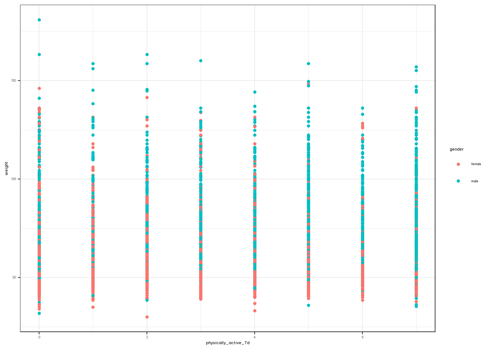
- How does height differ between boys and girls?
A_mod %>% gf_histogram(~height, fill = ~gender)A_mod %>% gf_density(~ height, fill = ~gender)- Does grade affect how physically active students are, and does it differ between boys and girls?
A_mod %>% filter(gender %in% c("male", "female")) %>%
gf_boxplot( x = ~grade, y = ~physically_active_7d, fill = ~gender) - Do heavier students (like me) tend to be in higher grades?
A_mod %>% gf_boxplot( x = ~weight, y = ~grade)- Do older students sleep less on school nights, and does it differ between boys and girls?
A_mod %>% gf_boxplot(x = ~school_night_hours_sleep, y = ~age, fill = ~gender)- Do students who are more physically active also strength train more?
A_mod %>% gf_point( strength_training_7d ~physically_active_7d)6. Say
Weight tells us almost nothing about how many days a student is active.
Students at every activity level, 0 to 7 days a week, cover nearly the same range of weights, for both boys and girls.
Heavier students are not visibly more or less active than lighter ones.
7. Limit
This panel can’t say anything about fitness or body composition, since weight alone isn’t BMI. There is also missing data.
Panel B — category / talk
helmet_12m × gender, text_while_driving_30d × grade. Hours of TV may be ordinal — argue before you average it.
1. See the table
What is a case? Which columns are Quant / Qual? What is missing?
dplyr::glimpse(PanelB)Rows: 13,583
Columns: 8
$ age <dbl> 14, 14, 15, 15, 15, 15, 15, 14, 15, 15, 15, 15…
$ gender <chr> "female", "female", "female", "female", "femal…
$ grade <chr> "9", "9", "9", "9", "9", "9", "9", "9", "9", "…
$ hispanic <chr> "not", "not", "hispanic", "not", "not", "not",…
$ race <chr> "Black or African American", "Black or African…
$ helmet_12m <chr> "never", "never", "never", "never", "did not r…
$ text_while_driving_30d <chr> "0", "", "30", "0", "did not drive", "did not …
$ hours_tv_per_school_day <chr> "5+", "5+", "5+", "2", "3", "5+", "5+", "5+", …My PanelB data has:
- 13,583 observations and 08 variables.
age: Quantitative, numericgender: Qualitative, categorical. Encoded, to be mutated grade: Qualitative, categorical. Encoded, to be mutated hispanic: Qualitative, categorical. Encoded, to be mutated - `race``: Qualitative, categorical. Encoded
, to be mutated helmet_12m: Qualitative, categorical. Encoded, to be mutated text_while_driving_30d: Qualitative, categorical. Encoded, to be mutated’ hours_tv_per_school_day: Qualitative, categorical. Encoded, to be mutated
skimr::skim(PanelB)| Name | PanelB |
| Number of rows | 13583 |
| Number of columns | 8 |
| _______________________ | |
| Column type frequency: | |
| character | 7 |
| numeric | 1 |
| ________________________ | |
| Group variables | None |
Variable type: character
| skim_variable | n_missing | complete_rate | min | max | empty | n_unique | whitespace |
|---|---|---|---|---|---|---|---|
| gender | 0 | 1 | 0 | 6 | 12 | 3 | 0 |
| grade | 0 | 1 | 0 | 5 | 79 | 6 | 0 |
| hispanic | 0 | 1 | 0 | 8 | 231 | 3 | 0 |
| race | 0 | 1 | 0 | 41 | 2805 | 6 | 0 |
| helmet_12m | 0 | 1 | 0 | 12 | 311 | 7 | 0 |
| text_while_driving_30d | 0 | 1 | 0 | 13 | 918 | 9 | 0 |
| hours_tv_per_school_day | 0 | 1 | 0 | 12 | 338 | 8 | 0 |
Variable type: numeric
| skim_variable | n_missing | complete_rate | mean | sd | p0 | p25 | p50 | p75 | p100 | hist |
|---|---|---|---|---|---|---|---|---|---|---|
| age | 77 | 0.99 | 16.16 | 1.26 | 12 | 15 | 16 | 17 | 18 | ▁▂▅▅▇ |
Furthermore, on the Qual variables panel-B data has :
genderhas 3 levels:gradehas 6 levels:hispanichas 3 levels:racehas 6 levels:helment_12mhas 7 levels:text_while_driving_30dhas 9 levels:hours_tv_per_school_dayhas 8 levels:
And on the Quant variables panel-B data has :
agehas a mean of 16.15, sd of 1.26, median of 16.00, min of 12.00, and max of 18.00
B_mod <- PanelB |> mutate( gender = as.factor(gender),
grade = as.factor(grade), hispanic = as.factor(hispanic), race = as.factor(race), helmet_12m = as.factor(helmet_12m), text_while_driving_30d = as.factor(text_while_driving_30d), hours_tv_per_school_day = as.factor(hours_tv_per_school_day))
glimpse(B_mod)Rows: 13,583
Columns: 8
$ age <dbl> 14, 14, 15, 15, 15, 15, 15, 14, 15, 15, 15, 15…
$ gender <fct> female, female, female, female, female, female…
$ grade <fct> 9, 9, 9, 9, 9, 9, 9, 9, 9, 10, 9, 9, 9, 9, 9, …
$ hispanic <fct> not, not, hispanic, not, not, not, not, not, n…
$ race <fct> Black or African American, Black or African Am…
$ helmet_12m <fct> never, never, never, never, did not ride, did …
$ text_while_driving_30d <fct> 0, , 30, 0, did not drive, did not drive, , , …
$ hours_tv_per_school_day <fct> 5+, 5+, 5+, 2, 3, 5+, 5+, 5+, 5+, do not watch…2. Ask
One question this table can answer. One it cannot. Write both.
Looking at the overall Spine statement, I can pose the following Questions:
- Do boys or girls text while driving more? 2. Do boys or girls skip helmets more?
- Are the students who text while driving older?
Possibly cannot answer:
- Why do some students never wear a helmet?
- Do students who text while driving have more crashes?
3. Choose a mark
Geom, map mark, or (later) test that matches the pair type. Name it before you code.
Bar Graph Box Plot Mosaic Charts
vcd::structable(grade ~ gender , data = B_mod) %>% vcd::mosaic()vcd::structable(grade ~ gender , data = B_mod) %>% vcd::mosaic(type = "expected")mosaic::xchisq.test(grade ~ gender, data = B_mod) vcd::structable(gender ~ helmet_12m , data = B_mod) %>% vcd::mosaic()vcd::structable(gender ~ helmet_12m , data = B_mod) %>% vcd::mosaic(type = "expected")mosaic::xchisq.test(gender ~ helmet_12m , data = B_mod) 4. Predict
What do we think we will see? One sentence, before Run. I think more boys would likely skip wearing helmets.
5. Make
- Do boys or girls text while driving more?
B_mod %>% gf_bar( ~text_while_driving_30d, fill = ~gender)2. Do boys or girls skip helmets more?
B_mod %>% gf_bar( ~helmet_12m, fill = ~gender)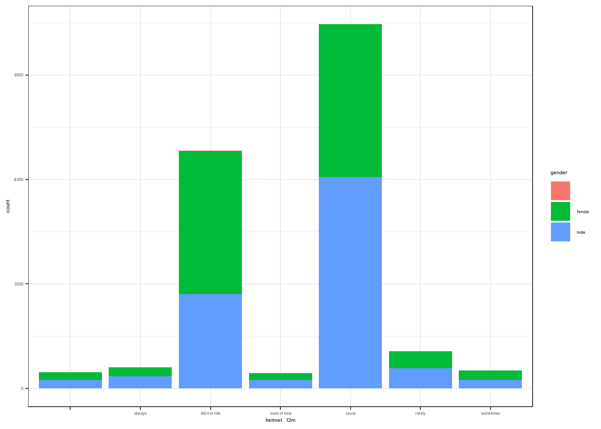
vcd::structable(gender ~ helmet_12m , data = B_mod) %>% vcd::mosaic()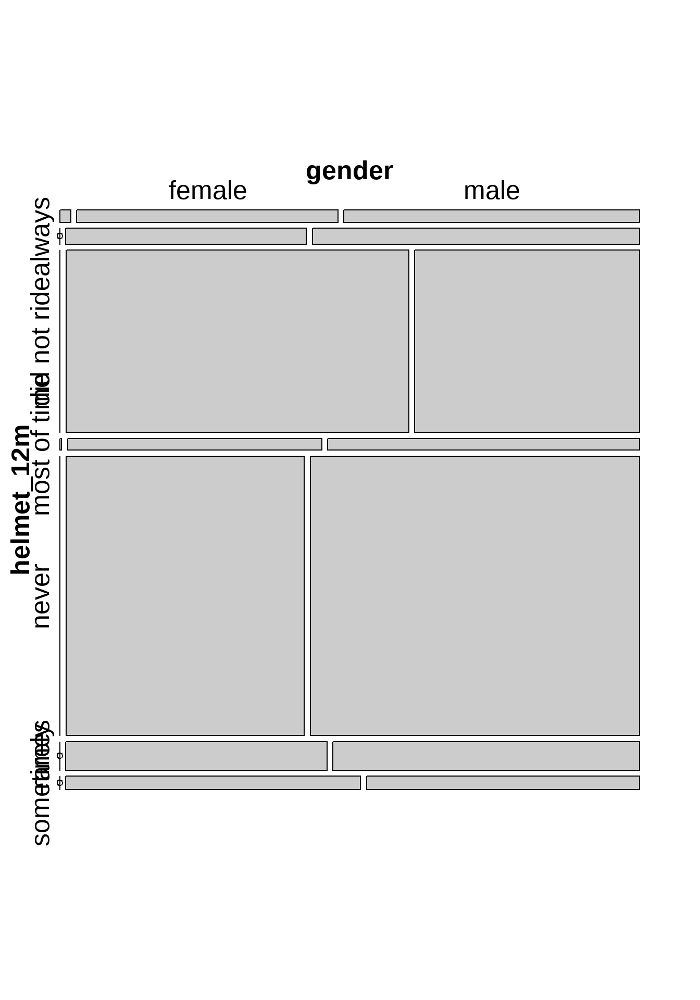
vcd::structable(gender ~ helmet_12m , data = B_mod) %>% vcd::mosaic(type =
"expected")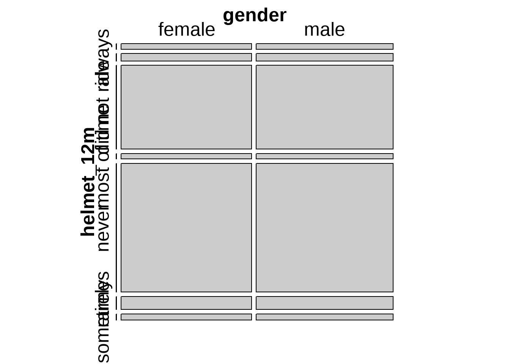
- Are the students who text while driving older?
B_mod %>% gf_boxplot( x = ~age, y =~text_while_driving_30d)6. Say
Most students never wear a helmet, whether they are boys or girls.
Never is the tallest bar by a wide margin, and both boys and girls make up a large part of it.
Helmet use is rare among students of both genders.
7. Limit
This panel shows how often students say they wear a helmet, not why they skip it.
The chart shows counts, not proportions, so not an exact boys versus girls comparison.
Panel C — place
Same file as Group 3 C. Different question. lifeExp vs gdpPercap, or pop as symbol size.
Geometry is not in the CSV. Join in R, then use the same seven headings.
1. See the table
Authors: Anmol, Sadiya, Shivgun
dplyr::glimpse(PanelC)Rows: 142
Columns: 6
$ country <chr> "Afghanistan", "Albania", "Algeria", "Angola", "Argentina", …
$ continent <chr> "Asia", "Europe", "Africa", "Africa", "Americas", "Oceania",…
$ year <int> 2007, 2007, 2007, 2007, 2007, 2007, 2007, 2007, 2007, 2007, …
$ lifeExp <dbl> 43.828, 76.423, 72.301, 42.731, 75.320, 81.235, 79.829, 75.6…
$ pop <int> 31889923, 3600523, 33333216, 12420476, 40301927, 20434176, 8…
$ gdpPercap <dbl> 974.5803, 5937.0295, 6223.3675, 4797.2313, 12779.3796, 34435…My PanelA data has:
142 observations and 06 variables.
year: Quantitative, numericlifeExp: Quantitative, numericpop: Quantitative, numericgdpPercap: Quantitative, numericcountry: Qualitative, categorical. Encoded, to be mutated continent: Qualitative, categorical. Encoded, to be mutated
skimr::skim(PanelC)| Name | PanelC |
| Number of rows | 142 |
| Number of columns | 6 |
| _______________________ | |
| Column type frequency: | |
| character | 2 |
| numeric | 4 |
| ________________________ | |
| Group variables | None |
Variable type: character
| skim_variable | n_missing | complete_rate | min | max | empty | n_unique | whitespace |
|---|---|---|---|---|---|---|---|
| country | 0 | 1 | 4 | 24 | 0 | 142 | 0 |
| continent | 0 | 1 | 4 | 8 | 0 | 5 | 0 |
Variable type: numeric
| skim_variable | n_missing | complete_rate | mean | sd | p0 | p25 | p50 | p75 | p100 | hist |
|---|---|---|---|---|---|---|---|---|---|---|
| year | 0 | 1 | 2007.00 | 0.00 | 2007.00 | 2007.00 | 2007.00 | 2007.00 | 2.007000e+03 | ▁▁▇▁▁ |
| lifeExp | 0 | 1 | 67.01 | 12.07 | 39.61 | 57.16 | 71.94 | 76.41 | 8.260000e+01 | ▂▃▃▆▇ |
| pop | 0 | 1 | 44021219.57 | 147621397.90 | 199579.00 | 4508033.50 | 10517531.00 | 31210041.75 | 1.318683e+09 | ▇▁▁▁▁ |
| gdpPercap | 0 | 1 | 11680.07 | 12859.94 | 277.55 | 1624.84 | 6124.37 | 18008.84 | 4.935719e+04 | ▇▂▁▂▁ |
Furthermore, on the Qual variables panel-C data has :
countryhas 142 levelscontinenthas 5 levels
And on the Quant variables panel-C data has :
yearhas a mean of 2.007000e+03 , sd of 0.00, median of 2.007000e+03, min of 2007.00, and max of 2.007000e+03lifeExphas a mean of 6.700742e+01, sd of 1.207302e+01 , median of 7.193550e+01 , min of 39.61, and max of 8.260300e+01pophas a mean of 4.402122e+07, sd of 1.476214e+087, median of 1.051753e+07, min of 199579.00, and max of 1.318683e+09gdpPercaphas a mean of1.168007e+04, sd of 1.285994e+04, median of 6.124371e+03 , min of 277.5519 , and max of 4.935719e+04
There is NO missing data. We are good to mutate
C_mod <- PanelC |> mutate( country = as.factor(country), continent = as.factor(continent))
glimpse(C_mod)Rows: 142
Columns: 6
$ country <fct> "Afghanistan", "Albania", "Algeria", "Angola", "Argentina", …
$ continent <fct> Asia, Europe, Africa, Africa, Americas, Oceania, Europe, Asi…
$ year <int> 2007, 2007, 2007, 2007, 2007, 2007, 2007, 2007, 2007, 2007, …
$ lifeExp <dbl> 43.828, 76.423, 72.301, 42.731, 75.320, 81.235, 79.829, 75.6…
$ pop <int> 31889923, 3600523, 33333216, 12420476, 40301927, 20434176, 8…
$ gdpPercap <dbl> 974.5803, 5937.0295, 6223.3675, 4797.2313, 12779.3796, 34435…2. Ask
One question this table can answer. One it cannot. Write both.
Looking at the overall Spine statement, I can pose the following Questions:
Which continents have the highest GDP per capita?
Which continents have the largest total populations?
Does life expectancy vary across continents?
How do countries around the world differ in life expectancy, population, and GDP per capita in 2007?
Is higher GDP per capita associated with higher life expectancy?
Do countries with larger populations tend to have lower life expectancy?
Possibly cannot be answered:
Has GDP per capita changed over the years?
Has life expectancy improved over the years?
Does having a higher GDP per capita cause people to live longer?
3. Choose a mark
Geom, map mark, or (later) test that matches the pair type. Name it before you code.
Box Plot Scatter Plot World Map
4. Predict
What do we think we will see? One sentence, before Run.
5. Make
Human brick first. Optional: one AI prompt, pasted below, only for what section 3 named.
- Which continents have the highest GDP per capita?
C_mod %>% gf_boxplot( x = ~continent, y = ~gdpPercap)- Which continents have the largest total populations?
C_pop %>% gf_boxplot( x = ~continent, y = ~total_pop) - Does life expectancy vary across continents?
C_mod %>% gf_boxplot(x = ~continent, y = ~lifeExp) How do countries around the world differ in life expectancy, population, and GDP per capita in 2007?
Life Expectancy
gf_sf(geometry = ~geometry, data = C_new, fill = ~lifeExp) +
scale_fill_viridis_c(na.value = "grey85") +
labs(
title = "Life Expectancy around the world",
subtitle = "Comparing life expectancy across countries in 2007",
caption = "Source: Panel C dataset",
fill = "Life expectancy (years)"
) +
theme_madhatter() 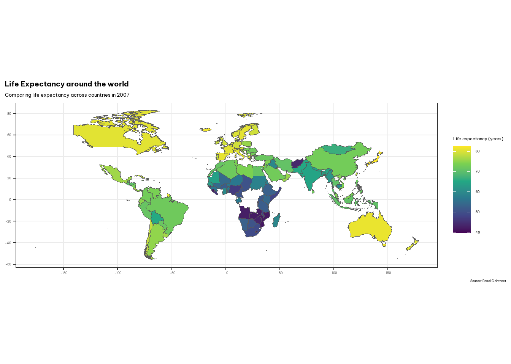
- Population
gf_sf(geometry = ~geometry, data = C_new, fill = ~pop) +
scale_fill_viridis_c(na.value = "grey85") +
labs(
title = "Population around the world",
subtitle = "Comparing popualtion across countries in 2007",
caption = "Source: Panel C dataset",
fill = "Population (log10 scale)"
) +
theme_madhatter() 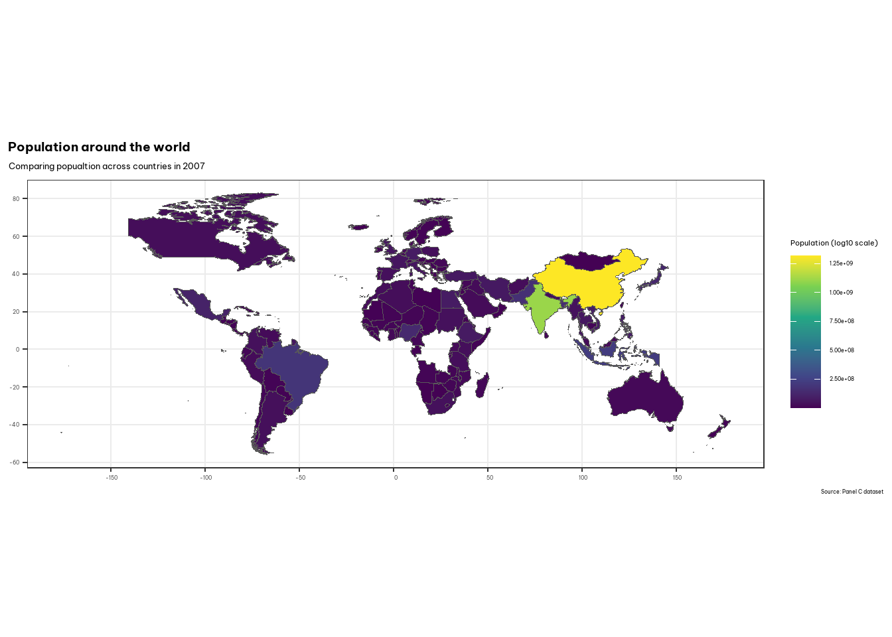
- GDP per capita
gf_sf(geometry = ~geometry, data = C_new, fill = ~gdpPercap) +
scale_fill_viridis_c(na.value = "grey85") +
labs(
title = "GDP per capita around the world",
subtitle = "Comparing gdp per person across countries in 2007",
caption = "Source: Panel C dataset",
fill = "GDP per capita"
) +
theme_madhatter() 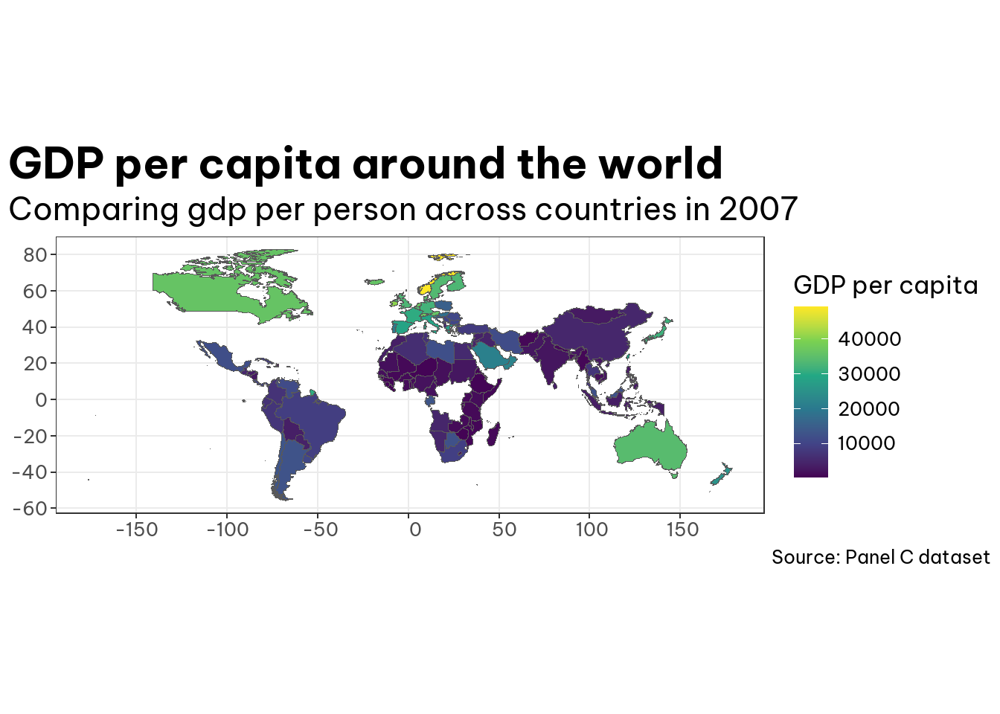
6. Say
Life Expectancy
Sub-Saharan Africa trails the world in life expectancy
The dark purple cluster across central and southern Africa stands out starkly against the yellow-green of Europe, North America and Australia, where people live well into their 80s.
Population
China and India are in a population category of their own
China and India stand out as clear outliers, they burn so bright on the map, every other country fades into the dark.
GDP per capita
North America, Europe and Australia lead in GDP per capita while Africa and South Asia lag far behind
North America, Western Europe and Australia glow green against a largely dark purple map, with Africa and South Asia showing the lowest GDP per capita by a wide margin.
The pattern across all three maps tells the same story: the countries with the highest GDP per capita also live the longest.
7. Limit
Russia, the USA and the Democratic Republic of Congo are missing from the map.
The USA and Russia are among the largest economies in the world, and the DRC is one of the most populous nations in Africa. Their presence could meaningfully shift the story these maps are telling.
Conclusion
What the spine looks like after three panels.
Bodies, habits and wealth follow patterns, and those patterns are rarely random or fair.
What we will not claim:
That correlation is causation, heavier students are not necessarily less active because of their weight. That missing countries in Panel C do not matter, they do. That 2007 GDP or life expectancy data reflects the world today.
Which lines were human, which were machine:
Human: the questions, the observations, the Say sections, the choice of variables, the story
Machine: debugging syntax errors, fixing missing brackets.
Limits:
PanelA and B have significant missing data in height and weight. Panel C is missing Russia, USA and DRC.
Panel D — The Hinkley Case
In 1993, Erin Brokovich stumbled upon a case that would become one of the largest class action lawsuits in American history.
Pacific Gas and Electric PG & E had been leaking Chromium 6, a toxic chemical into the groundwater of Hinkley, a small desert community in California.
Residents were getting sick and no one was connecting the dots. Erin did.
This map traces the story on the ground: the PG&E compressor facility, the Chromium-6 contamination plume spreading through the aquifer, the groundwater flow, and the homes of the families whose lives were quietly being destroyed.
1. Playing with Maps
h <- leaflet() %>%
addTiles() %>%
# Set view to be roughly centred on Hinkley, CA,USA
setView(lng = -117.18937683138594, lat = 34.919081905328625, zoom = 13.4)
hmap_esri_imagery <- leaflet() %>%
setView(lng = -117.18937683138594, lat = 34.919081905328625, zoom = 13
) %>%
addProviderTiles("Esri.WorldImagery") %>%
addCircleMarkers (lng = -117.1990,
lat = 34.9300,
radius = 5,
color = "brown",
fillOpacity = 1,
label = "Hinkley, CA")
map_esri_imagery h %>% addMarkers(
lng = -117.1622383607778, lat = 34.90374722777231,
popup = "Pacific Gas and Electric (PG & E) Company"
)h %>%
addCircles(
lng = -117.18937683138594,
lat = 34.919081905328625,
radius = 4500,
stroke = TRUE,
color = "yellow",
weight = 3,
fill = TRUE,
fillColor = "red"
)leaflet() %>%
addTiles() %>%
setView(lng = -117.18937683138594, lat = 34.919081905328625, zoom = 13) %>%
addRectangles(
lat1 = 34.9050, lng1 = -117.22524624156321,
lat2 = 34.9600, lng2 = -117.13746251715695
)leaflet() %>%
addTiles() %>%
setView(lng = -117.18937683138594, lat = 34.919081905328625, zoom = 12) %>%
addPolygons(
lng = c(-117.26379965144292, -117.11855776559129, -117.14402382941634, -117.22217000652593),
lat = c(34.95749774996647, 34.93752074954549, 34.882027322658615, 34.88735462976936)
)2. The Final Map
hinkley_map <- leaflet() %>%
addTiles() %>%
setView(lng = -117.18937683138594, lat = 34.919081905328625, zoom = 13) %>%
# Hinkley area boundary
addPolygons(
lng = c(-117.22470796056894, -117.145817921965, -117.14271734585267, -117.21113496405178),
lat = c(34.94412761049036, 34.93621954324678, 34.89112358375753, 34.89344061852938),
color = "black",
weight = 2,
fill = FALSE
) %>%
# PG&E marker
addMarkers(
lng = -117.1622383607778,
lat = 34.90374722777231,
popup = "PG & E : Providing water and cancer and hexavalent chromium to residents since 1952."
) %>%
# Groundwater
addCircles(
lng = -117.18937683138594,
lat = 34.919081905328625,
radius = 3300,
stroke = TRUE,
color = "black",
weight = 0.5,
fill = TRUE,
fillColor = "blue", popup = "groundwater"
) %>%
# Contamination plume
addCircles(
lng = c(-117.1622, -117.1680, -117.1750, -117.1820, -117.1894, -117.2050),
lat = c(34.9037, 34.9060, 34.9100, 34.9150, 34.9191, 34.9280),
radius = c(300, 450, 600, 750, 900, 1200),
color = "brown",
weight = 1,
fillColor = "orange",
fillOpacity = 0.15,
label = "Chromium-6 Contamination Plume"
) %>%
# Hinkley residents
addCircleMarkers(
lng = c(-117.20203292072142, -117.17925890572414, -117.19772687683383),
lat = c(34.92896619928256, 34.907178991393415, 34.9219608916045),
radius = 6,
color = "red",
fillColor = "red",
fillOpacity = 0.8,
popup = c(
"Donna Jensen - Children were playing in contaminated water, first family Erin visited",
"Pete Goya - Hinkley resident affected by Chromium-6",
"Roberta Walker - Key community member who worked with Erin"
)
)
hinkley_mapPanel E — Found Data
Authors: Shivgun, Ishita, Rachana
Our Hunch: AI Belief Among Art and Design Students
We collected data from across the Srishti Manipal campus. Our sample size for this was n = 60, which consisted of 30 art/BFa students and 30 design/BDes students, which included equal number of boys and girls.
1. See the table
dplyr::glimpse(panelE_AI)Rows: 60
Columns: 4
$ count <int> 1, 2, 3, 4, 5, 6, 7, 8, 9, 10, 11, 12, 13, 14, 15, 16, 17, 1…
$ gender <chr> "boy", "girl", "boy", "girl", "boy", "girl", "boy", "girl", …
$ program <chr> "art ", "art ", "design", "design", "art ", "art ", "design"…
$ AI_belief <chr> "no", "no", "yes", "yes", "yes", "yes", "yes", "yes", "yes",…My PanelE_AI data has:
- 60 observations and 03 variables.
program: Qualitative, categorical. Encoded, to be mutated gender: Qualitative, categorical. Encoded, to be mutated AI_belief: Qualitative, categorical. Encoded, to be mutated
skimr::skim(panelE_AI)| Name | panelE_AI |
| Number of rows | 60 |
| Number of columns | 4 |
| _______________________ | |
| Column type frequency: | |
| character | 3 |
| numeric | 1 |
| ________________________ | |
| Group variables | None |
Variable type: character
| skim_variable | n_missing | complete_rate | min | max | empty | n_unique | whitespace |
|---|---|---|---|---|---|---|---|
| gender | 0 | 1 | 3 | 4 | 0 | 2 | 0 |
| program | 0 | 1 | 4 | 6 | 0 | 2 | 0 |
| AI_belief | 0 | 1 | 2 | 3 | 0 | 2 | 0 |
Variable type: numeric
| skim_variable | n_missing | complete_rate | mean | sd | p0 | p25 | p50 | p75 | p100 | hist |
|---|---|---|---|---|---|---|---|---|---|---|
| count | 0 | 1 | 30.5 | 17.46 | 1 | 15.75 | 30.5 | 45.25 | 60 | ▇▇▇▇▇ |
Furthermore, on the Qual variables panel-E-AI data has :
genderhas 2 levelsprogramhas 2 levelsAI_beliefalso has 2 levels
There is NO missing data. We are good to mutate
AI <- panelE_AI |> mutate(gender = as.factor(gender), program = as.factor(program), AI_belief = as.factor(AI_belief))
glimpse(AI)Rows: 60
Columns: 4
$ count <int> 1, 2, 3, 4, 5, 6, 7, 8, 9, 10, 11, 12, 13, 14, 15, 16, 17, 1…
$ gender <fct> boy, girl, boy, girl, boy, girl, boy, girl, boy, girl, boy, …
$ program <fct> art , art , design, design, art , art , design, design, art …
$ AI_belief <fct> no, no, yes, yes, yes, yes, yes, yes, yes, no, yes, no, no, …2. Ask
Do design students have greater belief in AI compared to art students? Does it differ between boys and girls?
3. Choose a mark
Mosaic chart
4. Predict
We think Design students are more likely to have a greater belief in AI compared to art students, and boys are more likely to have a greater belief than girls.
5. Make
vcd::structable(AI_belief ~ program + gender , data = AI) %>% vcd::mosaic() 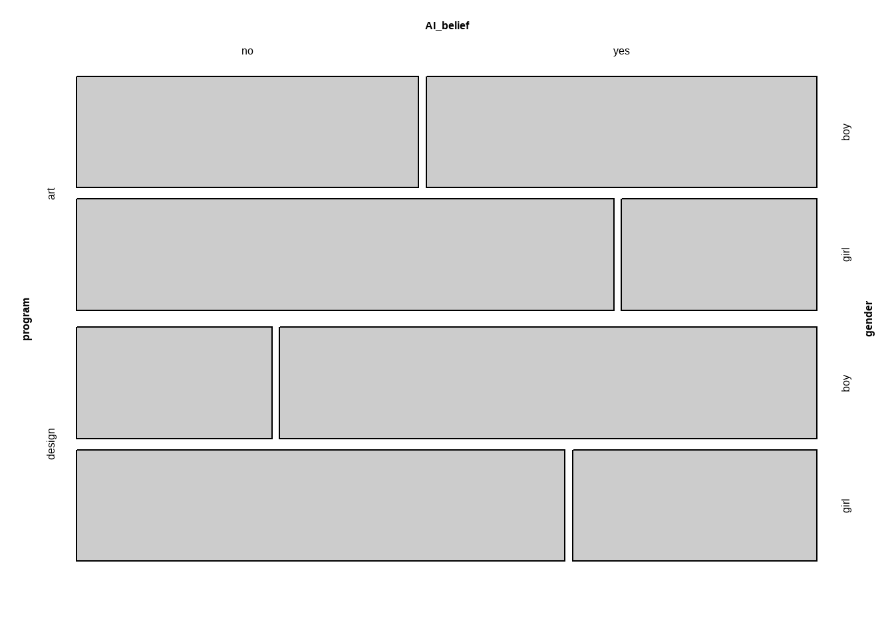
mosaic::xchisq.test(AI_belief ~ program, data = AI)
Pearson's Chi-squared test with Yates' continuity correction
data: x
X-squared = 0.60268, df = 1, p-value = 0.4376
18 14
(16.00) (16.00)
[0.14] [0.14]
< 0.50> <-0.50>
12 16
(14.00) (14.00)
[0.16] [0.16]
<-0.53> < 0.53>
key:
observed
(expected)
[contribution to X-squared]
<Pearson residual>mosaic::xchisq.test(AI_belief ~ gender, data = AI)
Pearson's Chi-squared test with Yates' continuity correction
data: x
X-squared = 5.4241, df = 1, p-value = 0.01986
11 21
(16.00) (16.00)
[1.27] [1.27]
<-1.25> < 1.25>
19 9
(14.00) (14.00)
[1.45] [1.45]
< 1.34> <-1.34>
key:
observed
(expected)
[contribution to X-squared]
<Pearson residual>6. Say
Gender, not program, drives AI belief. Boys believe significantly more than girls regardless of whether they study art or design.
7. Limit
“Belief” means something different to each student. One person might say yes because AI exists and they use it daily; another might say no because they’re thinking about ethics or environmental cost.
Allowance: Guys have more pocket money than Gals.
1. See the table
dplyr::glimpse(panelE_allowance)Rows: 60
Columns: 3
$ respondent <int> 1, 2, 3, 4, 5, 6, 7, 8, 9, 10, 11, 12, 13, 14, 15, 16, 17, …
$ gender <chr> "M", "M", "M", "M", "M", "M", "M", "M", "M", "M", "M", "M",…
$ allowance <dbl> 5.0, 5.0, 5.0, 12.5, 10.0, 7.0, 5.0, 4.0, 13.0, 5.0, 4.0, 3…My PanelE_allowance data has:
60 observations and 02 variables.
gender: Qualitative, categorical. Encoded, to be mutated allowance: Quantitative, numeric
skimr::skim(panelE_allowance)| Name | panelE_allowance |
| Number of rows | 60 |
| Number of columns | 3 |
| _______________________ | |
| Column type frequency: | |
| character | 1 |
| numeric | 2 |
| ________________________ | |
| Group variables | None |
Variable type: character
| skim_variable | n_missing | complete_rate | min | max | empty | n_unique | whitespace |
|---|---|---|---|---|---|---|---|
| gender | 0 | 1 | 1 | 1 | 0 | 2 | 0 |
Variable type: numeric
| skim_variable | n_missing | complete_rate | mean | sd | p0 | p25 | p50 | p75 | p100 | hist |
|---|---|---|---|---|---|---|---|---|---|---|
| respondent | 0 | 1 | 30.50 | 17.46 | 1 | 15.75 | 30.5 | 45.25 | 60 | ▇▇▇▇▇ |
| allowance | 0 | 1 | 6.22 | 5.26 | 1 | 4.00 | 5.0 | 7.12 | 40 | ▇▂▁▁▁ |
Furthermore, on the Qual variables panel-E-allowance data has :
genderhas 2 levels:
And on the Quant variables panel-A data has :
allowancehas a mean of 6.225 , sd of 5.25, median of 5, min of 1, and max of 40
There is NO missing data. We are good to mutate
allowance <- panelE_allowance |> mutate(gender = as.factor(gender))
glimpse(allowance)Rows: 60
Columns: 3
$ respondent <int> 1, 2, 3, 4, 5, 6, 7, 8, 9, 10, 11, 12, 13, 14, 15, 16, 17, …
$ gender <fct> M, M, M, M, M, M, M, M, M, M, M, M, M, M, M, M, M, M, M, M,…
$ allowance <dbl> 5.0, 5.0, 5.0, 12.5, 10.0, 7.0, 5.0, 4.0, 13.0, 5.0, 4.0, 3…2. Ask
Do guys have more pocket money allowance than girls?
3. Choose a mark
Histogram, Box Plot
4. Predict
Guys are more likely to have greater pocket money allowance than girls.
5. Make
gf_density( ~allowance,fill = ~gender, data = allowance) 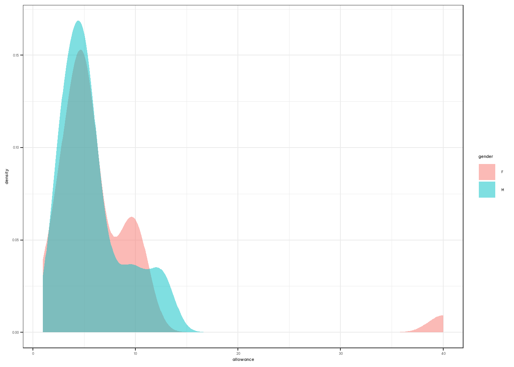
gf_boxplot( x = ~gender, y = ~allowance, data = allowance)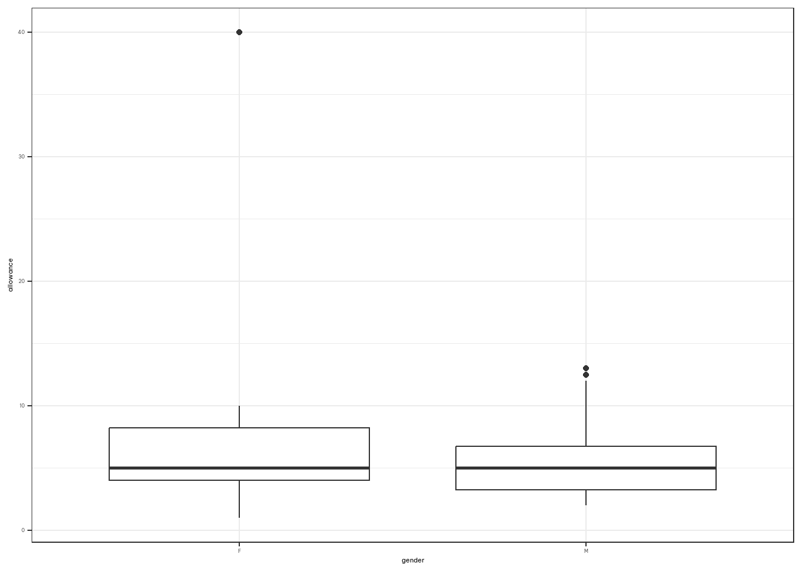
mosaic::t_test(allowance ~ gender, data = allowance)
Welch Two Sample t-test
data: allowance by gender
t = 0.69647, df = 40.296, p-value = 0.4901
alternative hypothesis: true difference in means between group F and group M is not equal to 0
95 percent confidence interval:
-1.806154 3.706154
sample estimates:
mean in group F mean in group M
6.70 5.75 6. Say
Contrary to our prediction, girls in our sample report a slightly higher pocket money allowance than boys, but the difference is not statistically significant.
7. Limit
One girl reported an unusually high allowance of around 40k, which likely pulls the female mean up.
MBTI: I am an INFP.
1. See the table
dplyr::glimpse(panelE_mbti)Rows: 60
Columns: 4
$ sno <int> 1, 2, 3, 4, 5, 6, 7, 8, 9, 10, 11, 12, 13, 14, 15, …
$ department <chr> "SMI", "SMI", "SMI", "SMI", "SMI", "SMI", "SMI", "S…
$ mbti.type <chr> "ENTP", "INTJ", "INFP", "INTP", "INFP", "INFP", "IS…
$ social.orientation <chr> "E", "I", "I", "I", "I", "I", "I", "I", "I", "E", "…My PanelE_mbti data has:
- 60 observations and 03 variables.
department: Qualitative, categorical. Encoded, to be mutated mbti.type: Qualitative, categorical. Encoded, to be mutated social.orientation: Qualitative, categorical. Encoded, to be mutated
skimr::skim(panelE_mbti)| Name | panelE_mbti |
| Number of rows | 60 |
| Number of columns | 4 |
| _______________________ | |
| Column type frequency: | |
| character | 3 |
| numeric | 1 |
| ________________________ | |
| Group variables | None |
Variable type: character
| skim_variable | n_missing | complete_rate | min | max | empty | n_unique | whitespace |
|---|---|---|---|---|---|---|---|
| department | 0 | 1 | 3 | 3 | 0 | 2 | 0 |
| mbti.type | 0 | 1 | 4 | 5 | 0 | 14 | 0 |
| social.orientation | 0 | 1 | 1 | 1 | 0 | 2 | 0 |
Variable type: numeric
| skim_variable | n_missing | complete_rate | mean | sd | p0 | p25 | p50 | p75 | p100 | hist |
|---|---|---|---|---|---|---|---|---|---|---|
| sno | 0 | 1 | 30.5 | 17.46 | 1 | 15.75 | 30.5 | 45.25 | 60 | ▇▇▇▇▇ |
Furthermore, on the Qual variables panel-E-mbti data has :
departmenthas 2 levelsmbti.typehas 14 levelssocial.orientationhas 2 levels
There is NO missing data. We are good to mutate
mbti <- panelE_mbti |> mutate(department = as.factor(department), mbti.type = as.factor(mbti.type) , social.orientation = as.factor(social.orientation))
glimpse(mbti)Rows: 60
Columns: 4
$ sno <int> 1, 2, 3, 4, 5, 6, 7, 8, 9, 10, 11, 12, 13, 14, 15, …
$ department <fct> SMI, SMI, SMI, SMI, SMI, SMI, SMI, SMI, SMI, SMI, S…
$ mbti.type <fct> ENTP, INTJ, INFP, INTP, INFP, INFP, ISFP, INFJ, INF…
$ social.orientation <fct> E, I, I, I, I, I, I, I, I, E, E, E, I, E, I, E, E, …2. Ask
Does personality type differ between MIT and SMI students?
3. Choose a mark
Bar graph
4. Predict
SMI students are more likely to be introverted than MIT students.
5. Make
gf_bar(~social.orientation, fill = ~department,
data = mbti, position = "fill")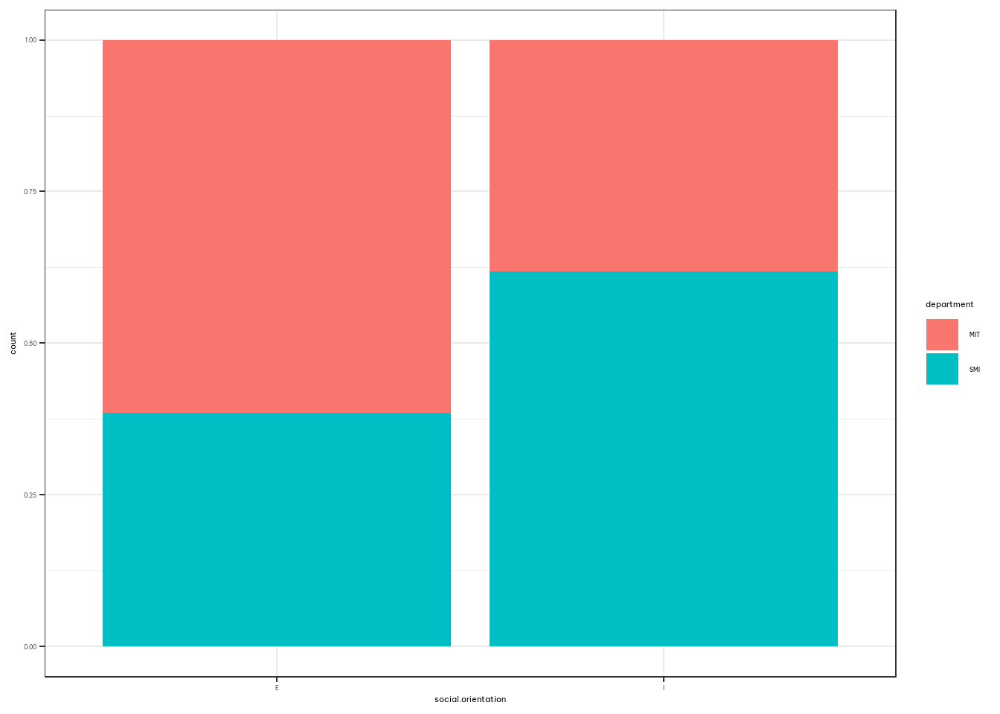
gf_bar( ~mbti.type, fill = ~department, data = mbti) 
mosaic::xchisq.test(social.orientation ~ department, data = mbti)
Pearson's Chi-squared test with Yates' continuity correction
data: x
X-squared = 2.3386, df = 1, p-value = 0.1262
16 10
(12.57) (13.43)
[0.68] [0.64]
< 0.97> <-0.94>
13 21
(16.43) (17.57)
[0.52] [0.49]
<-0.85> < 0.82>
key:
observed
(expected)
[contribution to X-squared]
<Pearson residual>6. Say
SMI students are more likely to be introverted, while MIT students lean towards extroversion, supporting my initial prediction.
However, the Chi-Square test (p = 0.126) shows that this association is not statistically significant.
7. Limit
The MBTI framework has been widely criticised for its lack of scientific validity and reliability, making it more suitable for casual personality exploration.
Relationship: Some peasants make, uh, friends earlier.
1. See the table
dplyr::glimpse(panelE_bfgf)Rows: 60
Columns: 3
$ respondants <int> 1, 2, 3, 4, 5, 6, 7, 8, 9, 10, 11, 12, 13, 14, 15,…
$ department <chr> "SMI", "SMI", "SMI", "SMI", "SMI", "SMI", "SMI", "…
$ relationship_status <chr> "No", "Yes", "No", "No", "No", "No", "Yes", "Yes",…My PanelE_mbti data has:
- 60 observations and 03 variables.
department: Qualitative, categorical. Encoded, to be mutated - `relationship_status``: Qualitative, categorical. Encoded
, to be mutated
skimr::skim(panelE_bfgf)| Name | panelE_bfgf |
| Number of rows | 60 |
| Number of columns | 3 |
| _______________________ | |
| Column type frequency: | |
| character | 2 |
| numeric | 1 |
| ________________________ | |
| Group variables | None |
Variable type: character
| skim_variable | n_missing | complete_rate | min | max | empty | n_unique | whitespace |
|---|---|---|---|---|---|---|---|
| department | 0 | 1 | 3 | 3 | 0 | 2 | 0 |
| relationship_status | 0 | 1 | 2 | 3 | 0 | 2 | 0 |
Variable type: numeric
| skim_variable | n_missing | complete_rate | mean | sd | p0 | p25 | p50 | p75 | p100 | hist |
|---|---|---|---|---|---|---|---|---|---|---|
| respondants | 0 | 1 | 30.5 | 17.46 | 1 | 15.75 | 30.5 | 45.25 | 60 | ▇▇▇▇▇ |
Furthermore, on the Qual variables panel-E-bfgf data has :
deparmenthas 2 levels- `relationship_status`` has 2 levels
There is NO missing data. We are good to mutate
bfgf <- panelE_bfgf |> mutate(department = as.factor(department), relationship_status = as.factor(relationship_status))
glimpse(bfgf)Rows: 60
Columns: 3
$ respondants <int> 1, 2, 3, 4, 5, 6, 7, 8, 9, 10, 11, 12, 13, 14, 15,…
$ department <fct> SMI, SMI, SMI, SMI, SMI, SMI, SMI, SMI, SMI, SMI, …
$ relationship_status <fct> No, Yes, No, No, No, No, Yes, Yes, No, Yes, No, No…2. Ask
Are SMI students more likely to have a boyfriend or girlfriend than MIT students?
3. Choose a mark
Bar Chart Mosaic chart
4. Predict
SMI students are more likely to be in a relationship or if I may, a situationship than MIT students.
5. Make
gf_bar( ~department, fill = ~relationship_status, data = bfgf)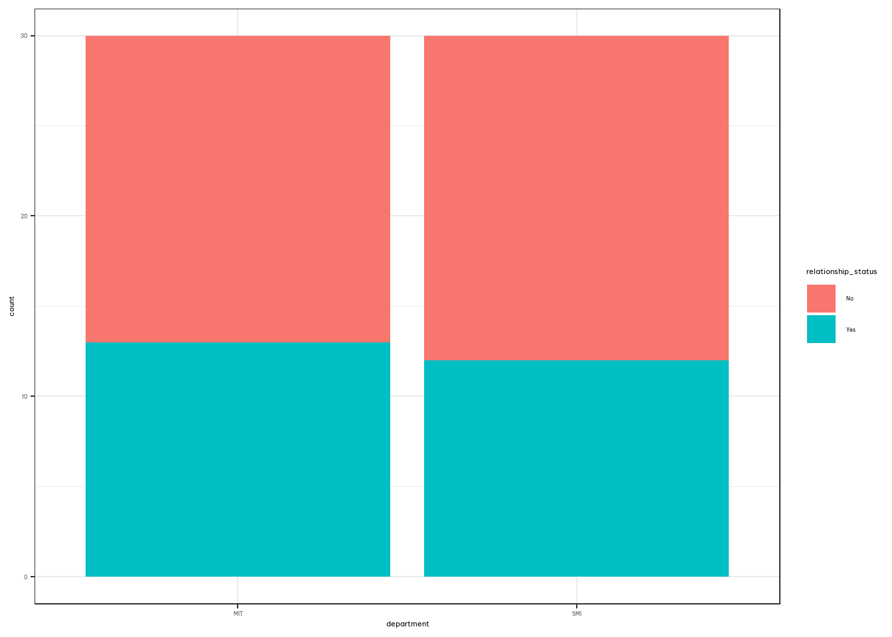
vcd::structable(relationship_status ~ department, data = bfgf) %>% vcd::mosaic() 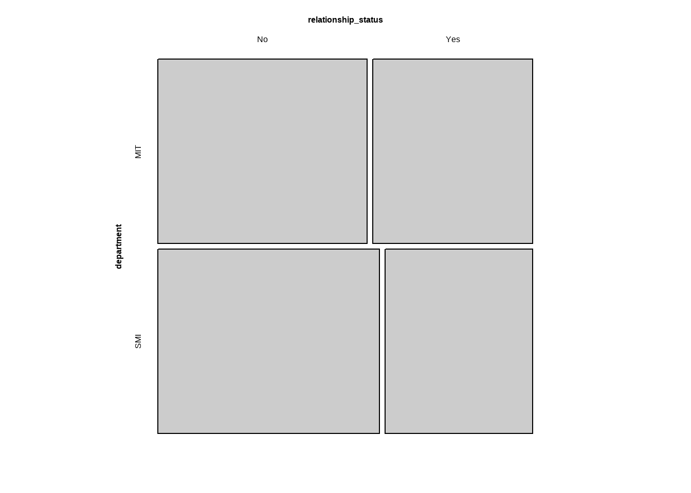
mosaic::xchisq.test( relationship_status ~department, data = bfgf)
Pearson's Chi-squared test with Yates' continuity correction
data: x
X-squared = 0, df = 1, p-value = 1
17 18
(17.50) (17.50)
[0.00] [0.00]
<-0.12> < 0.12>
13 12
(12.50) (12.50)
[0.00] [0.00]
< 0.14> <-0.14>
key:
observed
(expected)
[contribution to X-squared]
<Pearson residual>6. Say
SMI and MIT students are nearly identical in relationship status, but contrary to expectations, SMI students are marginally less likely to be in a relationship than their engineering counterparts.
The art student stereotype needs some updating.
7. Limit
With p = 1 and X-squared = 0, there is no statistically significant evidence of an association between department and relationship status.
The one person difference between 13 MIT and 12 SMI students saying yes is no more meaningful than a coin landing heads one extra time.
Tattoos: Do tattoos make people look attractive or not?
1. See the table
dplyr::glimpse(panelE_tattoo)Rows: 60
Columns: 4
$ Respondents <int> 1, 2, 3, 4, 5, 6, 7, 8, 9, 10, 11, 12, 13, 14, 15, 16, 17…
$ Gender <chr> "M", "M", "M", "M", "M", "M", "M", "M", "M", "M", "M", "M…
$ Has_tattoos. <chr> "yes", "no", "yes", "no", "no", "yes", "no", "yes", "no",…
$ Opinion <chr> "yes", "yes", "no", "yes", "no", "yes", "yes", "yes", "no…My PanelE_tattoo data has:
- 60 observations and 03 variables.
gender: Qualitative, categorical. Encoded, to be mutated Has_tattoos.: Qualitative, categorical. Encoded, to be mutated Opinion: Qualitative, categorical. Encoded, to be mutated
skimr::skim(panelE_tattoo)| Name | panelE_tattoo |
| Number of rows | 60 |
| Number of columns | 4 |
| _______________________ | |
| Column type frequency: | |
| character | 3 |
| numeric | 1 |
| ________________________ | |
| Group variables | None |
Variable type: character
| skim_variable | n_missing | complete_rate | min | max | empty | n_unique | whitespace |
|---|---|---|---|---|---|---|---|
| Gender | 0 | 1 | 1 | 1 | 0 | 2 | 0 |
| Has_tattoos. | 0 | 1 | 2 | 3 | 0 | 2 | 0 |
| Opinion | 0 | 1 | 2 | 3 | 0 | 2 | 0 |
Variable type: numeric
| skim_variable | n_missing | complete_rate | mean | sd | p0 | p25 | p50 | p75 | p100 | hist |
|---|---|---|---|---|---|---|---|---|---|---|
| Respondents | 0 | 1 | 30.5 | 17.46 | 1 | 15.75 | 30.5 | 45.25 | 60 | ▇▇▇▇▇ |
Furthermore, on the Qual variables panel-E-tattoo data has :
Genderhas 2 levelsHas_tatoos.has 2 levelsOpinionalso has 2 levels
There is NO missing data. We are good to mutate
tto <- panelE_tattoo |> mutate(Gender = as.factor(Gender), Has_tattoos. = as.factor(Has_tattoos.), Opinion = as.factor(Opinion))
glimpse(tto)Rows: 60
Columns: 4
$ Respondents <int> 1, 2, 3, 4, 5, 6, 7, 8, 9, 10, 11, 12, 13, 14, 15, 16, 17…
$ Gender <fct> M, M, M, M, M, M, M, M, M, M, M, M, M, M, M, M, M, M, M, …
$ Has_tattoos. <fct> yes, no, yes, no, no, yes, no, yes, no, yes, no, yes, no,…
$ Opinion <fct> yes, yes, no, yes, no, yes, yes, yes, no, yes, yes, no, y…2. Ask
Are tattooed people more likely to find tattoos attractive, and does this differ by gender?
3. Choose a mark
Mosaic chart
4. Predict
People who have tattoos are more likely to find tattoos attractive on others. Girls probably will find tattoos attractive the boys overall.
5. Make
vcd::structable(Opinion ~ Has_tattoos. + Gender , data = tto) %>% vcd::mosaic() 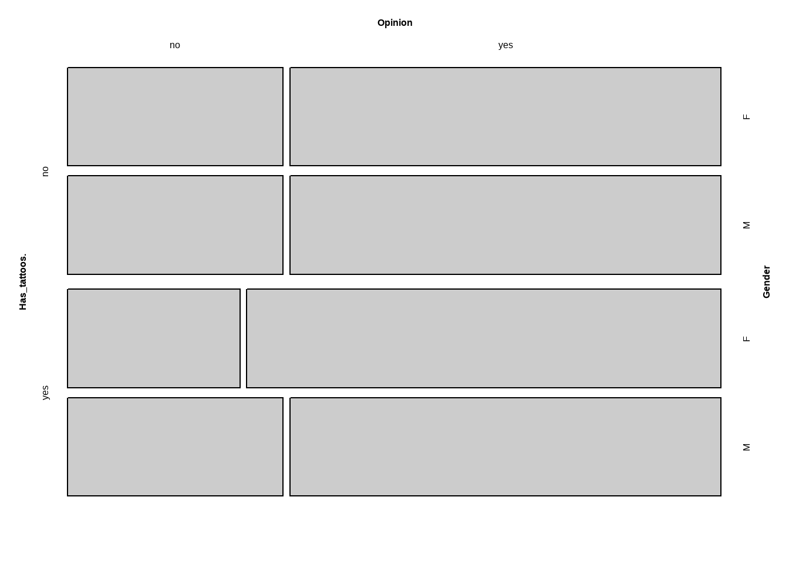
mosaic::xchisq.test(Opinion ~ Gender, data = tto)
Pearson's Chi-squared test with Yates' continuity correction
data: x
X-squared = 0, df = 1, p-value = 1
9 10
( 9.50) ( 9.50)
[0.00] [0.00]
<-0.16> < 0.16>
21 20
(20.50) (20.50)
[0.00] [0.00]
< 0.11> <-0.11>
key:
observed
(expected)
[contribution to X-squared]
<Pearson residual>mosaic::xchisq.test(Opinion ~ Has_tattoos. , data = tto)
Pearson's Chi-squared test with Yates' continuity correction
data: x
X-squared = 0, df = 1, p-value = 1
10 9
( 9.50) ( 9.50)
[0.00] [0.00]
< 0.16> <-0.16>
20 21
(20.50) (20.50)
[0.00] [0.00]
<-0.11> < 0.11>
key:
observed
(expected)
[contribution to X-squared]
<Pearson residual>6. Say
Neither having tattoos nor being female makes you more likely to find tattoos attractive. Opinion on tattoo attractiveness is evenly split regardless of gender or tattoo status.
7. Limit
Although both Chi-squared tests showed no significant associations, this does not necessarily mean that gender or having tattoos has no influence on attractiveness opinions.
Also, the tests examine gender and tattoo status separately, so they do not tell us whether the relationship between having tattoos and finding them attractive differs by gender.
TV Shows: Friends vs Modern Family vs House vs…BAH!!!
1. See the table
dplyr::glimpse(panelE_tvshows)Rows: 69
Columns: 4
$ students <dbl> 1, 2, 3, 4, 5, 6, 7, 8, 9, 10, 11, 12, 13, 14, 15, 16, 1…
$ friends <dttm> 2026-10-07, 2026-10-07, 2026-10-07, NA, 2026-10-10, 202…
$ house <dttm> NA, NA, NA, NA, NA, NA, NA, NA, 2026-10-06, 2026-10-08,…
$ modern_family <dttm> 2026-10-09, NA, 2026-10-08, 2026-10-06, 2026-10-07, 202…My PanelE_tvshows data has:
69 observations and 03 variables.
friends: Quantitative, continuous. Rating out of 10, NA means not watched/ratedhouse: Quantitative, continuous. Rating out of 10, NA means not watched/rated
modern_family: Quantitative, continuous. Rating out of 10, NA means not watched/rated
tvshows <- panelE_tvshows |>
mutate(friends = lubridate::day(friends) |> as.numeric(),
house = lubridate::day(house) |> as.numeric(),
modern_family = lubridate::day(modern_family) |> as.numeric()) |>
pivot_longer(c(-students), names_to = "show", values_to = "scores")
glimpse(tvshows)Rows: 207
Columns: 3
$ students <dbl> 1, 1, 1, 2, 2, 2, 3, 3, 3, 4, 4, 4, 5, 5, 5, 6, 6, 6, 7, 7, 7…
$ show <chr> "friends", "house", "modern_family", "friends", "house", "mod…
$ scores <dbl> 7, NA, 9, 7, NA, NA, 7, NA, 8, NA, NA, 6, 10, NA, 7, 10, NA, …skimr::skim(tvshows)| Name | tvshows |
| Number of rows | 207 |
| Number of columns | 3 |
| _______________________ | |
| Column type frequency: | |
| character | 1 |
| numeric | 2 |
| ________________________ | |
| Group variables | None |
Variable type: character
| skim_variable | n_missing | complete_rate | min | max | empty | n_unique | whitespace |
|---|---|---|---|---|---|---|---|
| show | 0 | 1 | 5 | 13 | 0 | 3 | 0 |
Variable type: numeric
| skim_variable | n_missing | complete_rate | mean | sd | p0 | p25 | p50 | p75 | p100 | hist |
|---|---|---|---|---|---|---|---|---|---|---|
| students | 0 | 1.00 | 35.17 | 20.22 | 1 | 18 | 35 | 52 | 70 | ▇▇▇▇▇ |
| scores | 68 | 0.67 | 7.43 | 1.79 | 2 | 7 | 8 | 9 | 10 | ▁▁▂▇▅ |
Furthermore, on the Quant variable panel-E-tvshows data has :
scoreshas a mean of 7.43 , sd of 1.78, median of 8, min of 2, and max of 10
2. Ask
Which show is rated highest on average by students?
3. Choose a mark
Density graph Box Plot
4. Predict
Friends will have the highest ratings since it’s the most universally known show, House will have the most variation since it’s more niche. The Ideal Final Result (IFR) would be that modern family has the highest ratings because its just GOATed.
5. Make
gf_density( ~scores, fill = ~show, data = tvshows)Warning: Removed 68 rows containing non-finite outside the scale range
(`stat_density()`).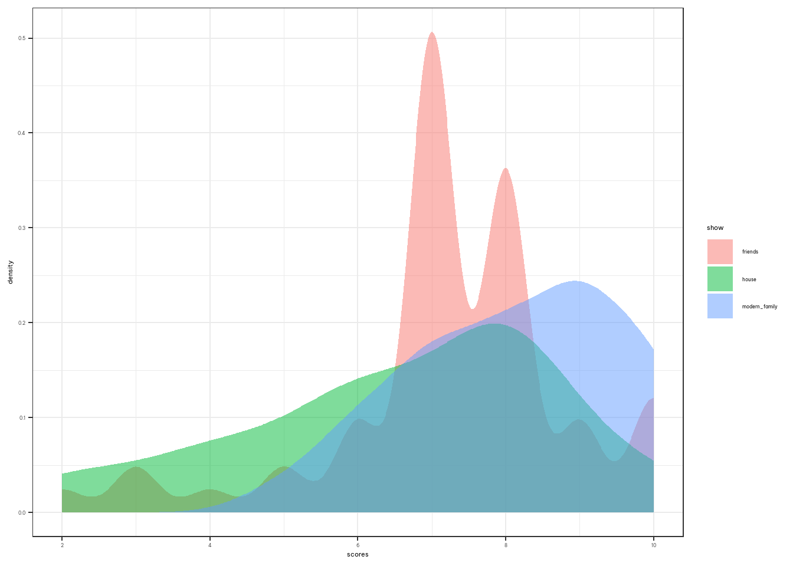
gf_boxplot( x = ~show, y = ~scores, data = tvshows)Warning: Removed 68 rows containing non-finite outside the scale range
(`stat_boxplot()`).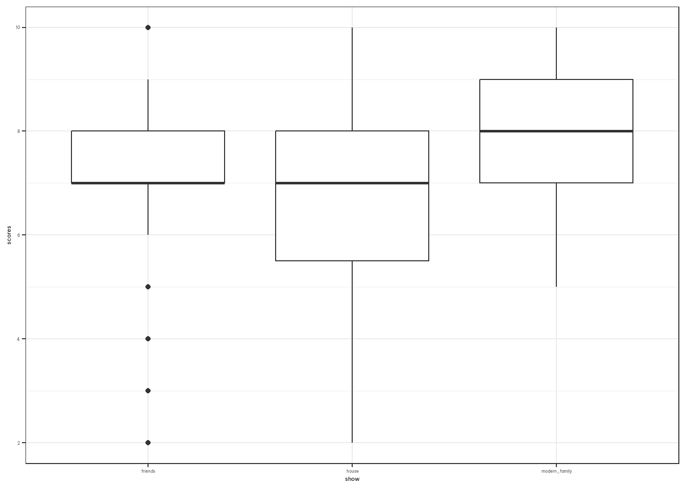
tvshows_clean <- tvshows |> filter(!is.na(scores))
aov(scores ~ show, data = tvshows_clean) %>% supernova::supernova() Analysis of Variance Table (Type III SS)
Model: scores ~ show
SS df MS F PRE p
----- --------------- | ------- --- ------ ----- ----- -----
Model (error reduced) | 48.795 2 24.398 8.436 .1104 .0004
Error (from model) | 393.306 136 2.892
----- --------------- | ------- --- ------ ----- ----- -----
Total (empty model) | 442.101 138 3.204 aov(scores ~ show, data = tvshows_clean) %>% supernova::pairwise(plot = TRUE)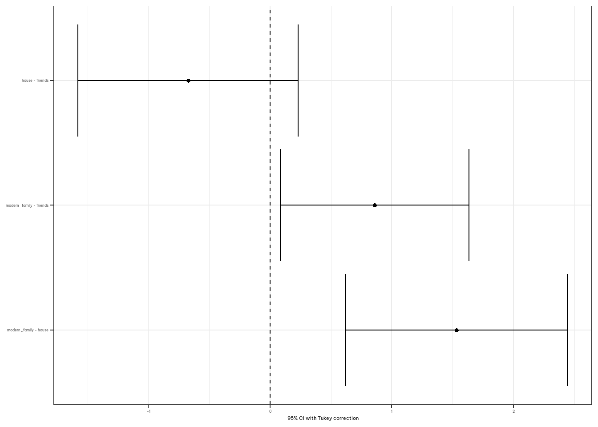
── Tukey's Honestly Significant Differences ────────────────────────────────────Model: scores ~ showshowLevels: 3Family-wise error-rate: 0.05
group_1 group_2 diff pooled_se q df lower upper p_adj
<chr> <chr> <dbl> <dbl> <dbl> <int> <dbl> <dbl> <dbl>
1 house friends -0.674 0.270 -2.495 136 -1.579 0.231 .1855
2 modern_family friends 0.859 0.231 3.710 136 0.083 1.634 .0261
3 modern_family house 1.533 0.272 5.637 136 0.621 2.444 .00036. Say
Modern Family was rated the highest overall, IFR achieved, with ratings clustering around 8-9, while House had the most spread with people either loving it or not. The ANOVA confirms these differences are real and not just chance (F = 8.44, p = 0.0004).
The pairwise comparison further revealed that Modern Family was rated significantly higher than both Friends and House. However, there was no statistically significant difference between Friends and House.
This suggests that Modern Family was the clear favourite among the students who rated these shows, supporting my IFR.
7. Limit
In this dataset, there were a lot missing values NA, since not many people had watched/rated House, in an ideal study, all the people within the sample should have watched all the shows, Friends, House and Modern Family.
# sessionInfo()